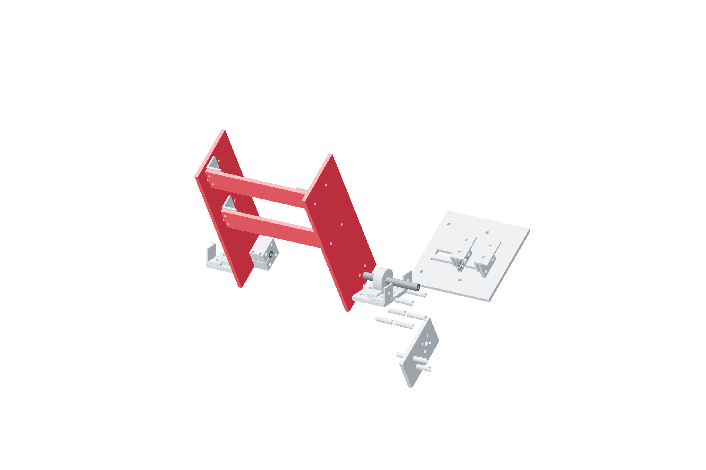

Gimbal / pitch78 / 179
Join the pitch frame
Qualified two-bolt split hubs carry torque on plain shafts. Metal plate corners close the frame around the supported output.
AddTwo pitch-output-hub · two pitch-side · two pitch-rear-crossbar · paired M4 × 50 grade12.9 clamps · plate fasteners and metal corners · 8 M5 × 45 / two washers / locking nut
Tools / setup3 / 4 mm hex · 7 / 8 mm wrenches · square

- Fit both matched shaft hubs, start the frame fasteners, and square the side members before seating the rear crossbars.
- Start every joint before tightening; bring opposed corners seated progressively.
- Restore each qualified clamp joint with both retained bolts and witness marks. Repeating its proof is required after disturbing its grip.
- Rotate the supported unloaded frame through its range: yaw/roll ±20°, pitch −20…+10°. Examine each corner clearance.
Ready when
Each hub has a passing torque-proof record and retained axial stack; the unloaded frame has no loose corner or contact inside its intended range. A contacting or loose frame is a failed fit. Correct its metal geometry before attaching a screw actuator.